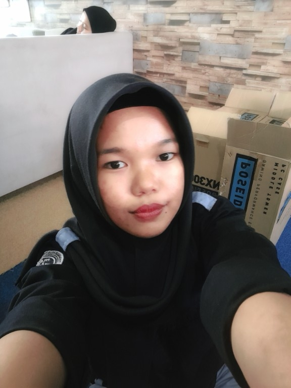
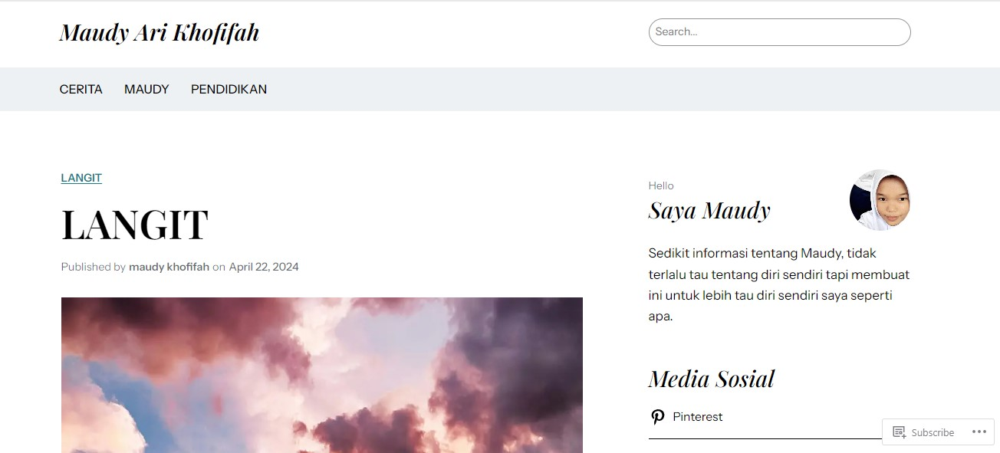
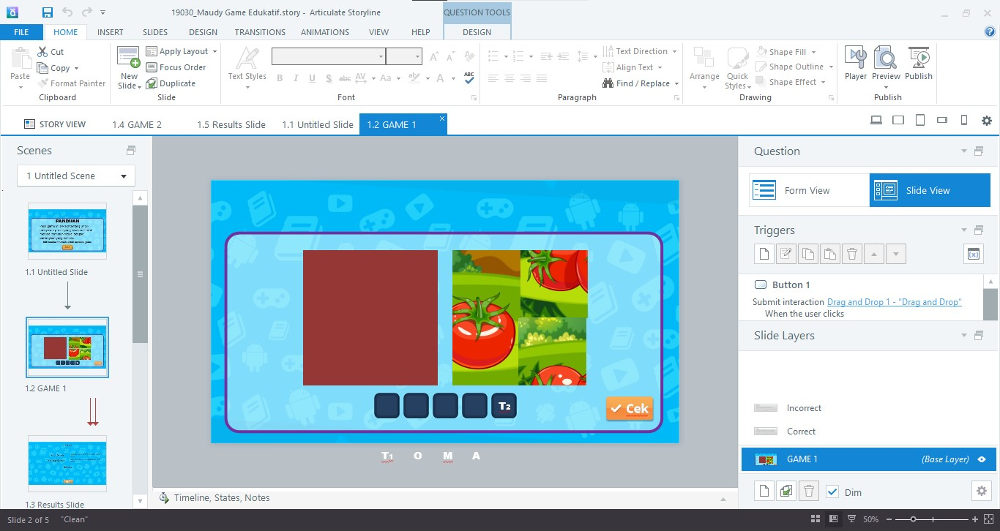

About me
- NIS: 19030.
- Nama: Maudy Ari Khofifah.
- Kelas: XI RPL (Rekayasa Perangkat Lunak).
- Jurusan: PPLG (Pengembangan Perangkat Lunak dan Gim).
- Tempat, Tanggal Lahir: Banjarnegara, 12 April 2008.
- Alamat: Desa Rakitan RT01 RW02 Kecamatan Madukara Kabupaten Banjarnegara.
School
- PAUD : PAUD Tunas Desa Rakitan.
- TK : TK Pertiwi Tambak Arum.
- SD : SD Negeri 2 Rakitan.
- SMP : SMP Negeri 3 Banjarnegara.
- SMK : SMK Negeri 1 Bawang.
Experience
- Menjadi Bendahara Osis saat SMP.
- Menjadi Dewan Penggalang saat SMP.
- Mengikuti organisasi pemuda pemudi di desa.
Skill
Hard Skill
Cukup menguasai 3 bahasa (Bahasa Indonesia, Bahasa Inggris, dan Bahasa Jawa).
Soft Skill
Mudah bersosialisasi dengan sesama.
Memiliki rasa ingin tahu yang tinggi.
Project
Desain Figma

Desain Blender

Desain Wordpress
https://maudy6.wordpress.com/
Desain membuat game sederhana menggunakan Articulates Storyline
Desain Logo menggunakan Canva

Desain Bussiness Card menggunakan Coreldraw

Contact
Telepon: +62-857-001-643-92